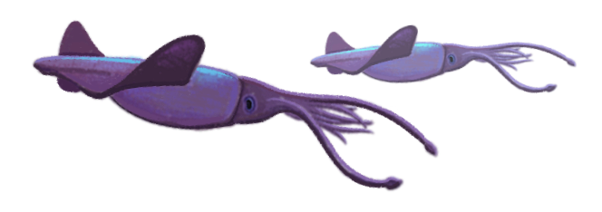
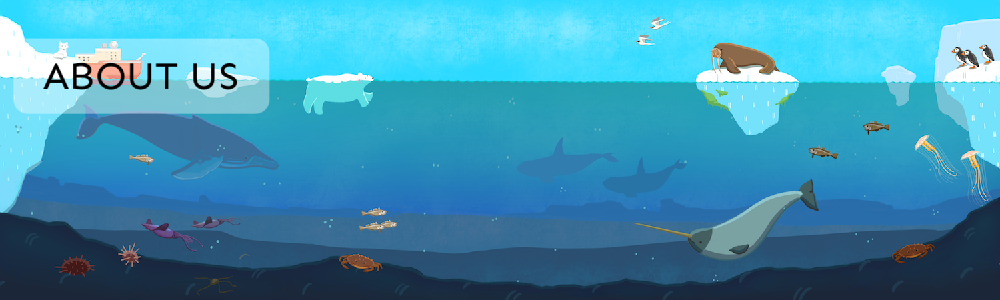
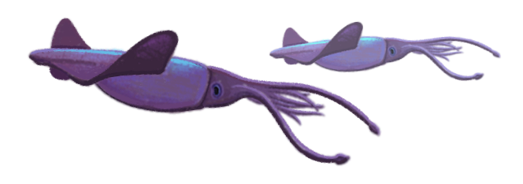
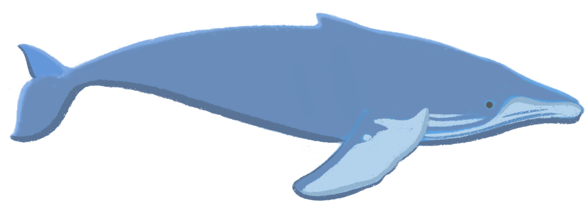
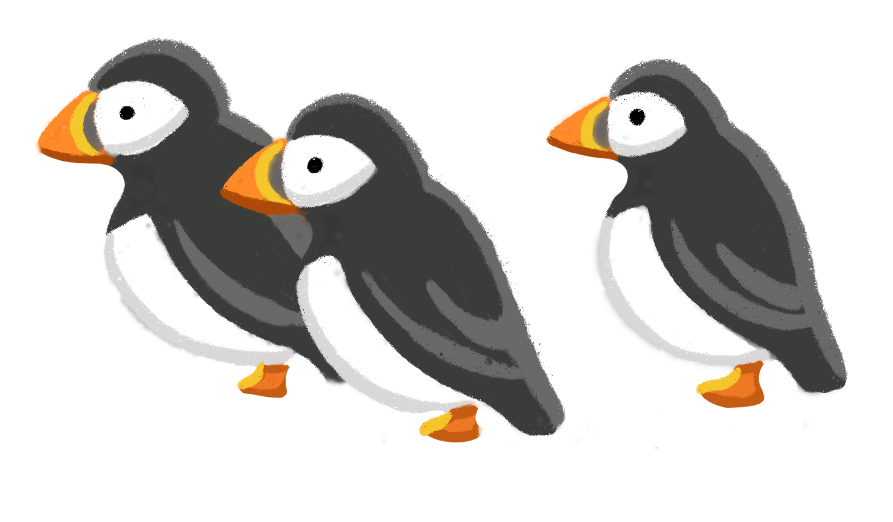

We are researchers whose work was so profoundly improved because of the open science community that we are dedicating our careers to empowering others and growing the movement.


We are researchers whose work was so profoundly improved because of the open science community that we are dedicating our careers to empowering others and growing the movement.

The Openscapes story starts with file names like “data_analysis_final_v2b.xls” — you know the ones. It is a story about learning we’re not the only one feeling lonely and stuck with this kind of workflow, and empowered that there is a better way. It is a story about reimagining what’s possible when we modernize how we collaborate as part of the open movement.
Openscapes has been co-developed by Julia Lowndes and Erin Robinson, combining their expertise of open data science and open data stewardship, community and program building, teaching and coaching, as well as their lived experience as researchers. Together, they built the Openscapes as a value-based initiative that builds momentum like a flywheel and sustainably supports research teams with open science. With the Openscapes Champions flagship program and the first cohort of research teams, Openscapes was initially launched by Julia through a Mozilla Fellowship in 2018, following her own team’s path to better science in less time.
Erin joined in 2020 and together they created the Openscapes Mentors Framework that supports scaling Openscapes into a movement with the Openscapes mentor community. Openscapes mentors are people embedded in science organizations that learn to lead Openscapes Champions programs for their organization. This framework was developed through a NASA grant that Julia and Erin lead. Beyond NASA, the Mentors Framework has supported mentors at several other organizations like NOAA, and the California Water Boards.
We are excited to continue learning and iterating with the open movement towards kinder science for future us.

Learn about our our team who are helping grow and improve Openscapes!

Openscapes is committed to providing a welcoming, safe, inclusive, and harassment-free experience for everyone.
We expect all participants to adhere to our Code of Conduct, which was influenced and adapted from rOpenSci and Mozilla.

Allison Horst creates original art for Openscapes. Formerly an artist in residence at NCEAS and Assistant Teaching Professor at the Bren School of Environmental Science & Management at the University of California, Santa Barbara, Allison now works as a Data Scientist Advocate at Observable. She is also one of the inaugural Openscapes Champions. Allison has a background in the fine arts, and in recent years, began creating digital open artwork for data science and statistics education – explore her Openscapes gallery, her stats illustrations and follow her on Twitter.
See all of Allison’s Openscapes artwork on the gallery page, including our logo, which represents open landscapes of possibility and the data within them.

We are funded through grants and contracts with our partners, which supports investment in our flywheel to iterate our initiatives and share stories through blogs and media. We are grateful for our funding partners and the broader open community that supports tooling, people, and communities.
Openscapes launched through funding from Mozilla, via an Open Science Fellowship awarded to Julia Stewart Lowndes. Openscapes grew with funding from NASA Earthdata, via decades-long community building leadership by Erin Robinson. Early funders also include the Gordon and Betty Moore Foundation, who supported us to develop a strategic growth plan, and Code for Science and Society, who supported us to improve daily practices for how we work and teach to more bravely align with our values for diversity, equity, inclusion, and belonging.
We are dedicated to leading Openscapes as an open source community. This includes exploring and growing mechanisms to administer funding for people building careers in open science. Funding was first administered through NCEAS, and is currently administered via Openscapes LLC and Open Collective.

The Openscapes website was originally built by Julia Stewart Lowndes with RMarkdown’s blogdown using the same open data science workflows used for research. The website was rebuilt by Samantha Csik in spring 2023 with Quarto, a new open-source, scientific and technical publishing system the Openscapes community has used since its earliest days (see quarto blog posts).